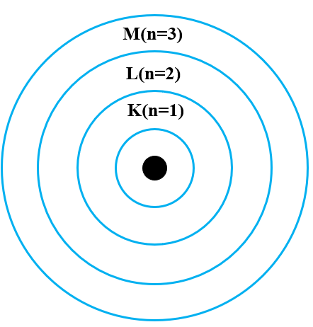

第三章 二极管及其基本电路
第一节 半导体的基本知识
- 导体：铁、铝、铜等低价金属元素，其最外层电子在外电场作用下容易产生定向移动，形成电流
- 绝缘体：惰性气体、橡胶等，其原子最外层电子受原子核的束缚很强，只有在外电场强到一定程度时才可能导电
- 半导体材料：导电性可受控制，导电性能介于导体与绝缘体之间的材料
常用半导体材料：
- 元素半导体：硅（Si）、锗（Ge）……
- 化合物半导体：砷化镓（GaAs）、磷化铝铟镓（AlGaInP）……
- 合金半导体：硅锗（SiGe）、砷化镓铝（AlGaAs）……
半导体分类：
半导体特点：
- 半导体受到外界光和热的激励时，导电性能发生显著变化。
- 在纯净半导体中加入微量杂质，导电性能显著提升。
半导体能带：
电子在原子周围形成轨道，由内向外分别为K层（n=1）、L层（n=2）、M层（n=3）、N层（n=4）、O层（n=5）、P层（n=6）。每层电子数量为\(2n^2\)。
电子在这些分立的轨道上具有分立的能量，这些分立的能量级在能量坐标上称为能级。
越靠近原子核能级越低。

本征半导体：
完全纯净的、结构完整的半导体晶体。
在绝对零度且无外界其他能量激发时，由于所有原子的价电子被共价键束缚，不能自由移动，此时本征半导体无法导电。
本征激发：
半导体中共价键对价电子的束缚不如绝缘体中那么牢固，当温度升高时，部分价电子会获得足够的随机热振动能量，越过禁带到达导带，从而形成自由电子，并在价带中留下等量的空穴。
在外加电流作用下，这些由本征激发产生的自由电子将在本征硅晶体内形成电流。
空穴：
当电子挣脱共价键束缚成为自由电子后，共价键中留下的空位。
空穴的出现是半导体区别于导体的一个重要特征。
载流子：
半导体中能够自由移动的带电粒子。
在本征半导体中，自由电子与空穴总是成对出现，因此在任何时候，本征半导体中的自由电子浓度与空穴浓度总是相等的。可以将空穴视为带电量与电子相等、但电极性为正的粒子，用空穴移动产生的电流来代表价电子移动产生的电流，此时空穴也就成为半导体中的一种载流子了。
载流子的产生与复合：
- 产生：
在热能或其他能量的激励下，晶体中的共价键结构被打破、以一定的速率成对地产生自由电子和空穴。
当温度升高时，将产生更多的自由电子和空穴，意味着载流子浓度的升高，晶体的导电能力也会加强。
- 复合：
当一个自由电子与一个空穴相遇，自由电子落入空穴中时，二者同时消失。
杂质半导体：
- P型半导体：
在硅晶体中掺入三价受主原子。受主原子只有3个价电子，在晶体中它与相邻4个硅原子形成共价键时，因缺少一个电子而产生一个空穴。此时空穴为多子，自由电子为少子。
受主能级（\(E_a\)）：由于受主原子的存在而产生的附加的受主获取电子的能量状态，位于禁带中靠近价带顶附近。
受主能级表明：三价原子很容易从硅晶体中获取一个电子而形成稳定结构，即电子
- N型半导体：
在硅晶体中掺入五价施主原子。施主原子有5个价电子，在晶体中它与相邻4个硅原子形成共价键时，会多出一个自由电子。此时空穴为少子，自由电子为多子。
受主原子：硼、铟、铝等能在硅晶体中接受电子的原子。
施主原子：磷、砷、锑等能在硅晶体中贡献电子的原子。
多子（多数载流子）：半导体中数量较多的载流子。
少子（少数载流子）：半导体中数量较少的载流子。
第二节 PN结的形成及特性
PN结：P区与N区的分界面形成的空间电荷区
冶金结：P区与N区的交界面
在半导体两个不同区域掺入三价或五价杂质，形成P型区和N型区。由于P区中空穴为多子，N区中自由电子为多子，于是在交界面处形成浓度差。高浓度物质向低浓度区域扩散，导致大部分自由电子和空穴在交界处复合。此时半导体整体正负电荷量仍是相等的，但P区由于失去空穴而留下带正电的杂质离子，N区由于失去自由电子留下带负电的杂质离子。
PN结中指多数载流子复合而几乎耗尽，因此又称耗尽区
由于耗尽区中载流子很少，因此PN结越宽电阻率越高
空间电荷区中会产生一个内电场，方向由带正电的N区指向带负电的P区。这个内电场会阻碍多子的扩散，但是会促进少子的漂移。
PN结中的扩散运动：由浓度差导致的多子的运动，会使空间电荷区变宽
PN结中的漂移运动：由电场作用导致的少子的运动，会使空间电荷区变窄
当漂移运动和扩散运动相等时，空间电荷区便处于动态平衡状态，形成平衡PN结
PN结的单向导电性：PN结外加正向电压时，电阻率很小，PN结导通；外加反向电压时，电阻值很大，PN结截止
- 外加正向电压（PN结正向偏置）：当PN结接入电路中，P区电位高于N区电位的情况。
此时外加电压形成的外加电场会使P区和N区的多子移动向PN结移动。P区的空穴进入PN结后，会中和一部分负离子；N区的自由电子进入PN结后，会中和一部分正离子。这会使PN结变窄，电阻率减小
- 外加反向电压：当PN结接入电路中，P区电位低于N区电位的情况。
此时外加电压形成的外加电场会使P区和N区的多子进一步远离PN结。这会使PN结变宽，电阻率增大
PN结的反向击穿（电击穿）：PN结两端反向电压增大到一定数值时，反向电流突然增加的现象。
反向击穿电压（V_BR）：发生反向击穿所需要的电压
PN结的击穿：
第三节 二极管
一、二极管的结构
二极管：可以看作PN结的物化器件
二、二极管的I-V特性
（1）正向特性：
门坎电压/死区电压（\(V_{th}\)）
正向导通压降（工作压降）
（2）反向特性：
第四节 二极管的基本电路及其分析方法
符号命名规则：
- 大写字母+大写下标：静态值（直流）
- 小写字母+小写下标：瞬时值（交流）
- 小写字母+大写下标：总量瞬时值（直流+交流）
二极管简化模型分析法：
- 理想模型
- 恒压降模型
- 折线模型
- 小信号模型：
静态：电路的直流工作状态
判断二极管导通/截止：
- 将电路中所有二极管均断开
- 判断二极管阴阳两极电压
- 若 阳极电压-阴极电压>二极管管压降，则导通；
反之则截止
- 再逐个分析各个二极管导通/断开的情况下，某个二极管导通/断开的情况
第五节 特殊二极管
一、齐纳二极管（稳压二极管）
稳压管稳压时，工作在反向击穿区
二、发光二极管
发光二极管发光时，工作在正向导通区